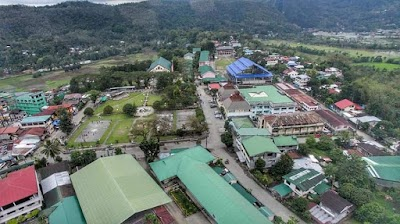
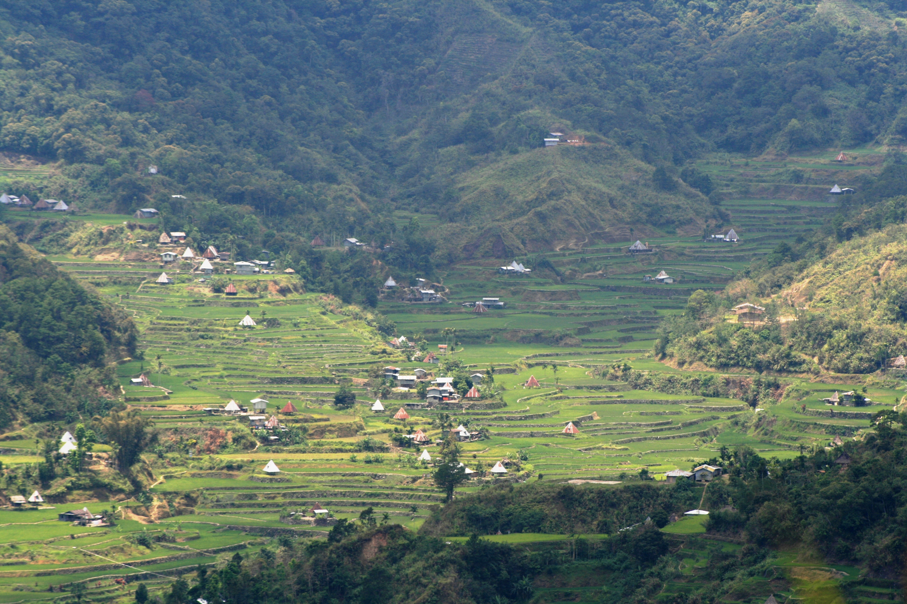
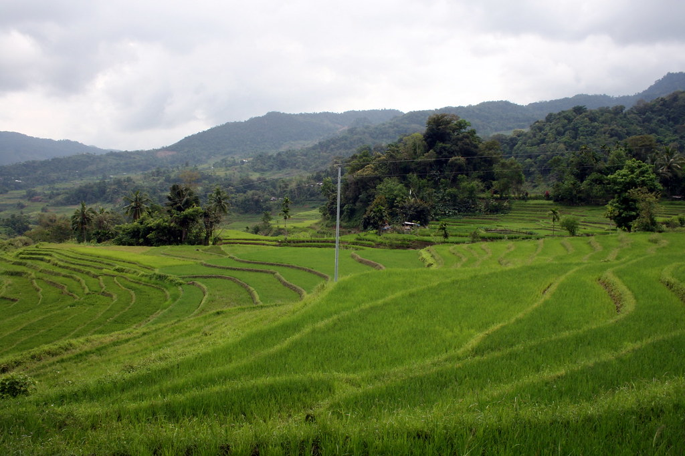
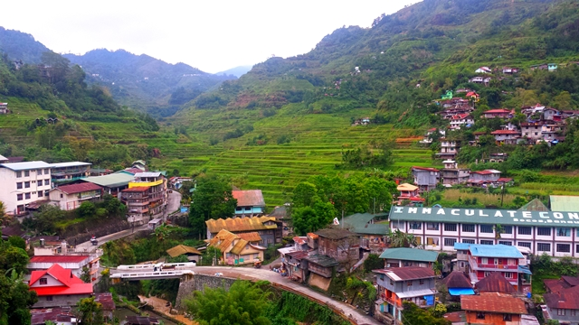
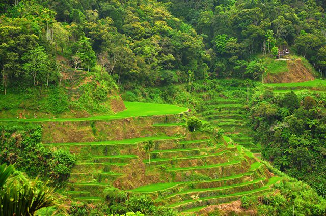
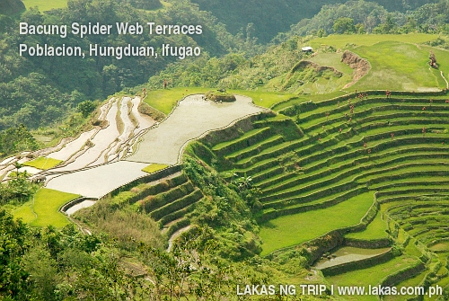
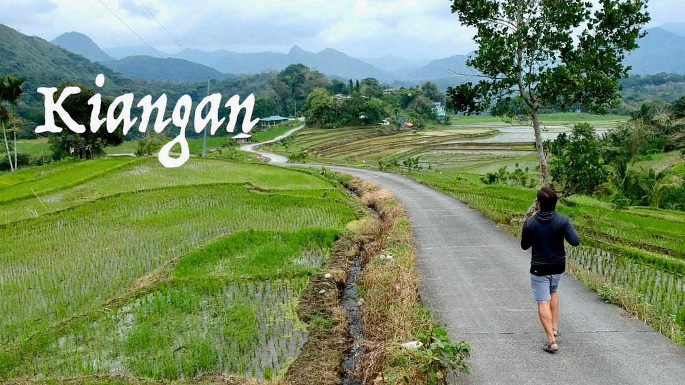
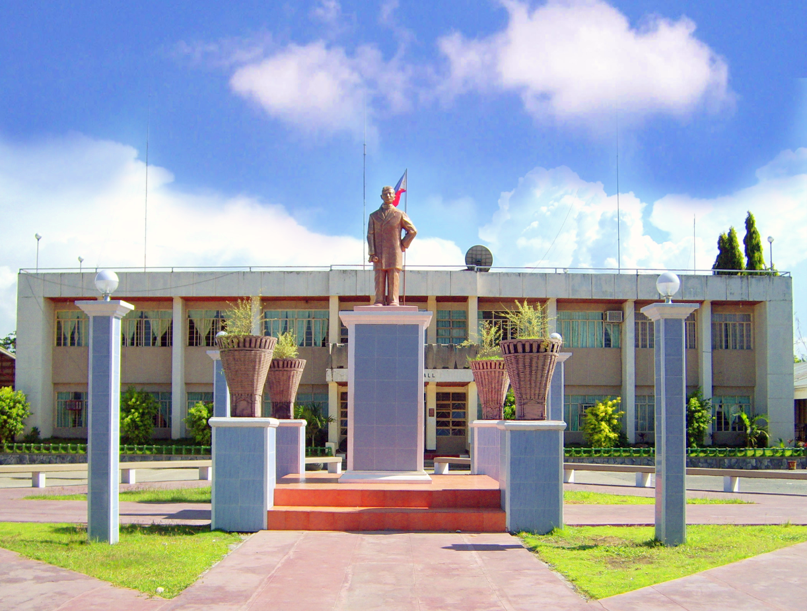
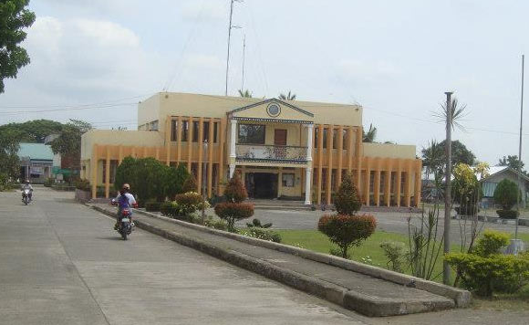
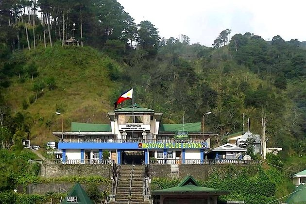

The 11 Municipalities of Ifugao
1. Lagawe(Capital)

Lagawe, officially the Municipality of Lagawe is a 4th class municipality and capital of the province of Ifugao,
Philippines. According to the 2020 census, it has a population of 18,876 people.
2. Aguinaldo

Aguinaldo, officially the Municipality of Aguinaldo,
is a 2nd class municipality in the province of Ifugao, Philippines.
According to the 2020 census, it has a population of 21,128 people.
3. Asipulo

Asipulo, officially the Municipality of Asipulo is
a 5th class municipality in the province of Ifugao, Philippines.
According to the 2020 census, it has a population of 15,963 people.
4. Banaue

Banaue, officially the Municipality of Banaue is a 4th class municipality in the province of Ifugao, Philippines. According to
the 2020 census, it has a population of 20,652 people.
It is widely known as the site of the UNESCO World Heritage Site, the Batad Rice Terraces and Bangaan Rice Terraces.
5. Hingyon

Hingyon, officially the Municipality of Hingyon is
a 5th class municipality in the province of Ifugao, Philippines.
According to the 2020 census, it has a population of 9,930 people.
6. Hungduan

Hungduan, officially the Municipality of Hungduan is a 4th class municipality in the province of Ifugao, Philippines.
According to the 2020 census, it has a population of 8,866 people. It is bounded on the north-east by the town of
Banaue in the east by Hingyon and on the southeast by the town of Kiangan.
7. Kiangan

Kiangan, officially the Municipality of Kiangan is a 4th class municipality in the province of Ifugao, Philippines.
According to the 2020 census, it has a population of 17,691 people. Kiangan is the oldest town in the province
8. Lamut

Lamut, officially the Municipality of Lamut is a 4th class municipality in the province of Ifugao, Philippines.
According to the 2020 census, it has a population of 26,235 people. Lamut has the following schools: Lamut Central School,
San Francisco High School, and Ifugao State University.
9. Alfonso Lista

Alfonso Lista, formerly known as Potia, officially the Municipality of Alfonso Lista is a 3rd class municipality in the province
of Ifugao, Philippines. According to the 2020 census, it has a population of 34,061 people.
10. Mayoyao

Mayoyao, officially the Municipality of Mayoyao is a 4th class municipality in the province of Ifugao, Philippines.
According to the 2020 census, it has a population of 15,621 people.
11. Tinoc
Tinoc, officially the Municipality of Tinoc is a 4th class municipality in the province of Ifugao, Philippines.
According to the 2020 census, it has a population of 18,475 people.